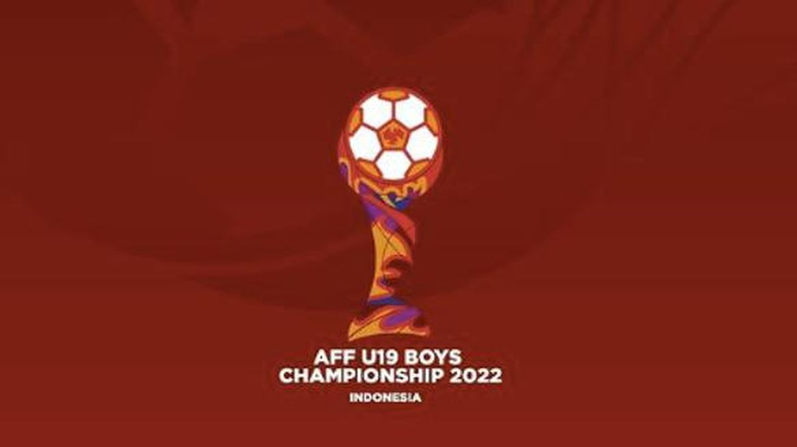

_2101082006.png)
_2101082006.png)

_2101082006.png)
_2101082006.png)


MOST POPULAR
|  | Dalam pertandingan penentuan posisi tiga Piala AFF U-19 yang diselenggarakan antara Vietnam dan Thailand, tim Vietnam berhasil meraih kemenangan yang mengesankan dan mengalahkan Thailand dengan skor akhir yang meyakinkan. Pertandingan yang berlangsung di stadion yang penuh semangat ini dimulai dengan intensitas tinggi dari kedua tim. Vietnam, yang tampil dengan semangat juang yang besar, berhasil mencetak gol pembuka pada menit ke-20 melalui serangan balik yang tajam. Gol tersebut memberikan keunggulan |
 |
awal bagi Vietnam dan semakin meningkatkan motivasi mereka.Thailand, yang tidak ingin menyerah begitu saja, mencoba meningkatkan intensitas serangan mereka dan mencari celah untuk menyamakan kedudukan. Namun, pertahanan yang solid dari tim Vietnam membuat mereka kesulitan untuk mencetak gol. Di babak kedua, Vietnam terus menunjukkan performa yang menakjubkan dan mengendalikan permainan. Mereka berhasil menambah gol kedua pada menit ke-55 melalui aksi individu yang brilian. Thailand, meskipun berusaha keras untuk bangkit, tidak mampu mengejar ketertinggalan. |